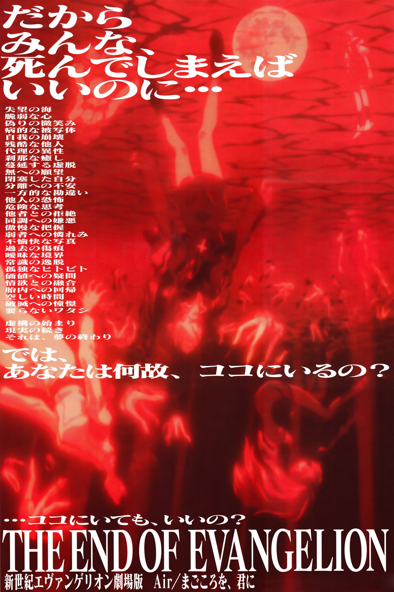
PRODUCTION INFORMATION
Due to time constraints, Hideaki Anno's inability to decide how to end NEON GENESIS EVANGELION along with the disatrious production schedule, the staff had little time to make those final episodes. However, they had this second chance to do everything they wanted. For THE END OF EVANGELION, Gainax revisited ideas that it had discarded due to that lack of time.
Anno describes this film as a remake of the last two episodes and an alternative ending to the original series, something akin to a video game with numerous endings. Shortly before the film's release, Anno released a film called NEON GENESIS EVANGELION: DEATH & REBIRTH that acted as a summary for the original TV series before the last two episodes. The ending portion of the film contains a preview for THE END OF EVANGELION.
The film was a box office success, grossing over 2.47 billion yen. To this day it's deemed as one of the greatest and most emotionally resonant and powerful animated films of all time.
Release Date: July 19, 1997
Directors: Hideaki Anno and Kazuya Tsurumaki
Studio: Gainax
STORY
Shinji has destroyed the final Angel, but unable to deal with reality, he shuts the world out. The promised time has come. An all-out attack is ordered on NERV, aiming to destroy the EVAs before Gendo Ikari can advance his own plans for the Human Instrumentality Project. Asuka is driven to the brink of death as she faces one of the toughest fights she's ever faced yet. Over the heads of the people rebelling against their own reality and feeding their dreams, the EVA series descends as if mocking the deception that is about to be uncovered. Shinji must make a choice as he is pushed to the limits of his sanity as he is forced to decide the fate of humanity.
The fate of destruction is also the joy of rebirth.
CAST AND CREDITS
Original Work: Gainax
Chief Direction: Hideaki Anno
Script/Screenplay: Hideaki Anno
Mechanical Design: Ikuto Yamashita and Hideaki Anno
Character Design: Yoshiyuki Sadamoto
Soundtrack: Shiro Sagisu
Storyboard: Hideaki Anno, Kiichi Hadame, Shinji Higuchi, Masayuki, Kazuya Tsurumaki
Mechanical Animation Direction: Yoh Yoshinari
Animation Direction: Hideaki Anno, Tadashi Hiramatsu, Shinji Suzuki
Direction: Kazuya Tsurumaki and Hideaki Anno
Art Direction: Hiroshi Katou
IMAGE GALLERY
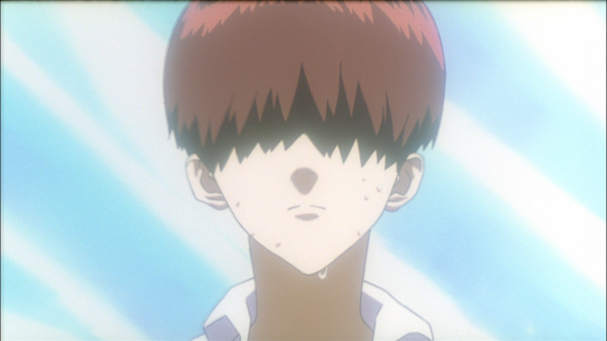
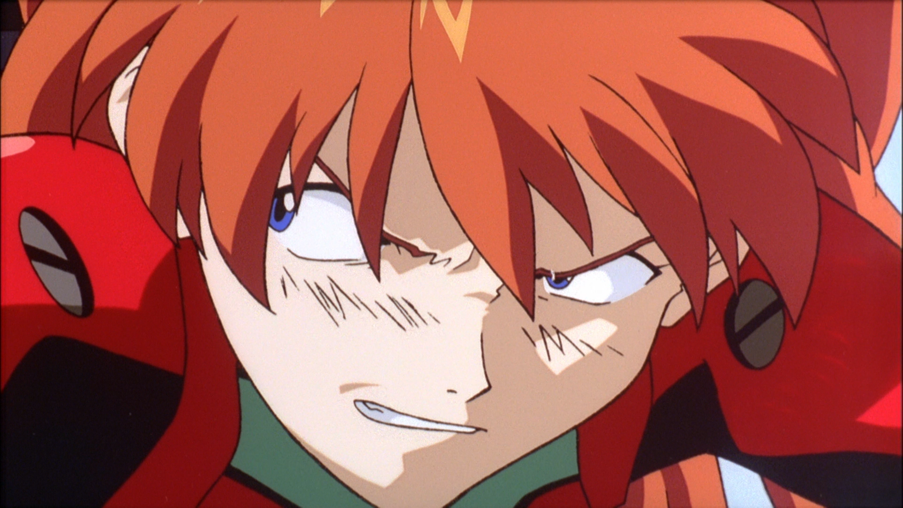
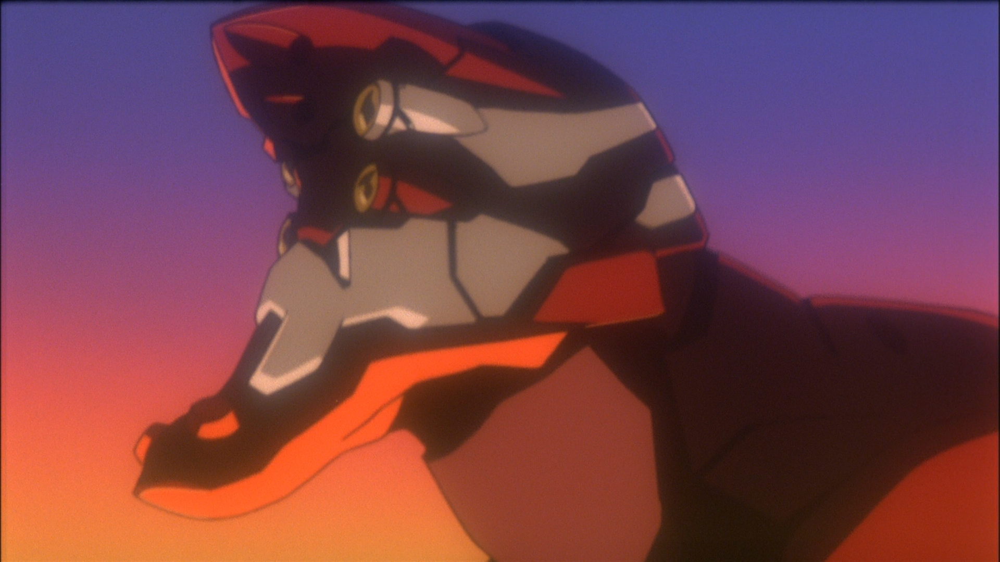
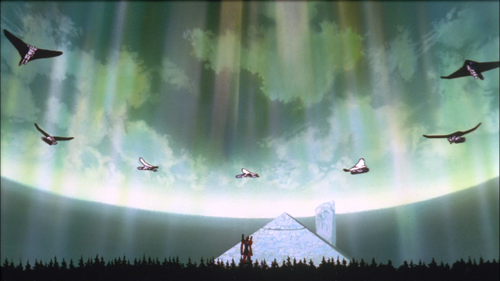
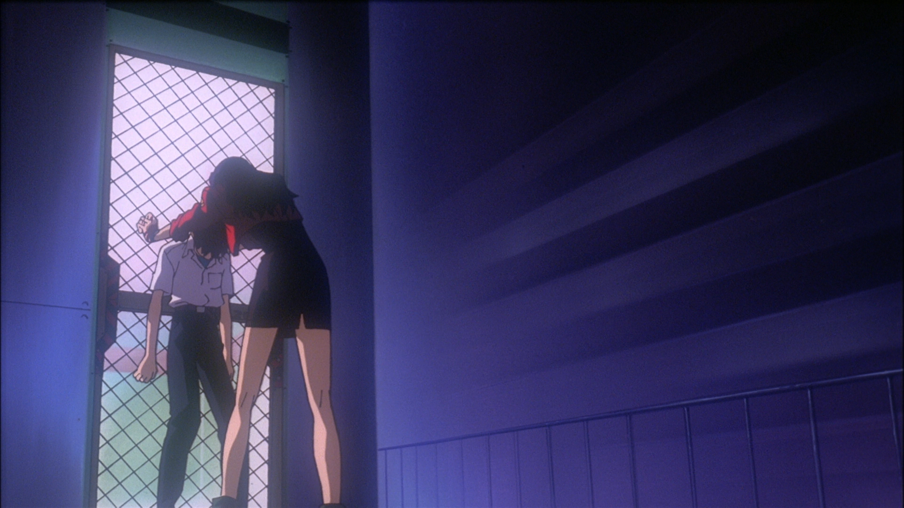
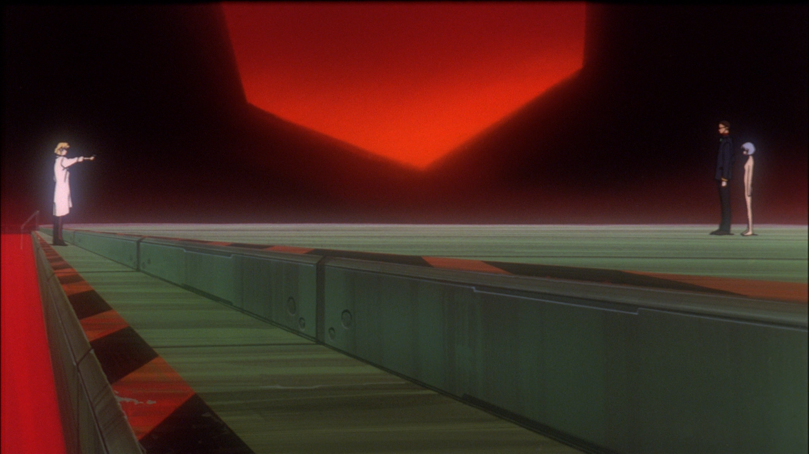
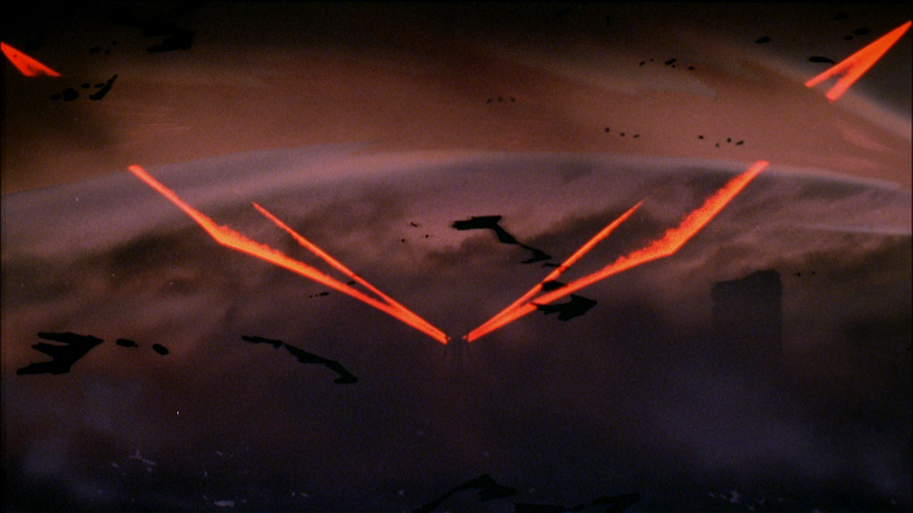
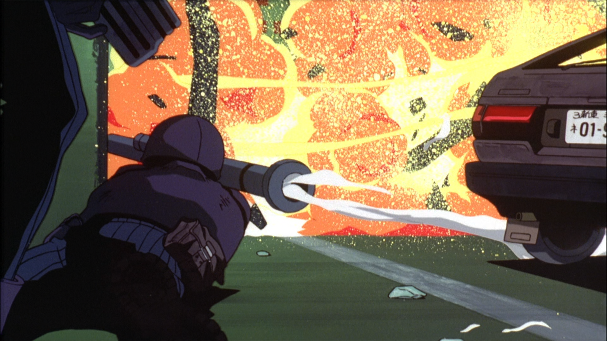
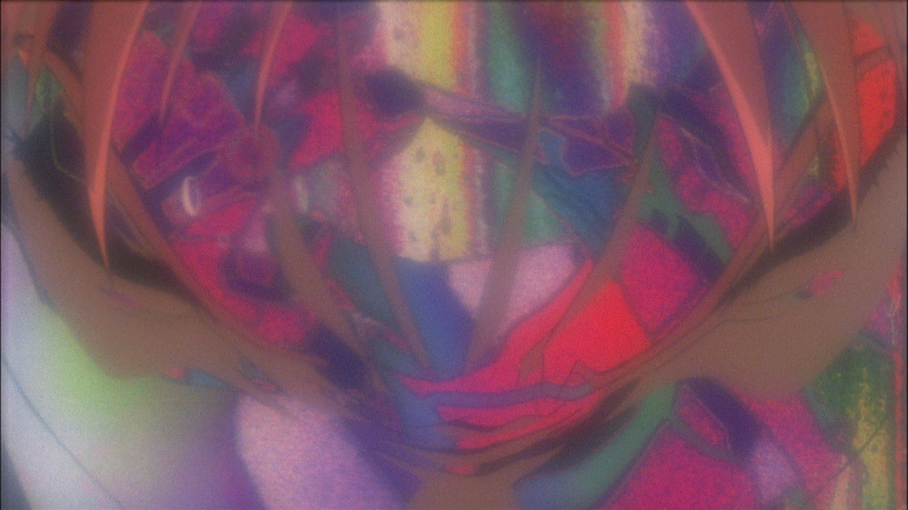
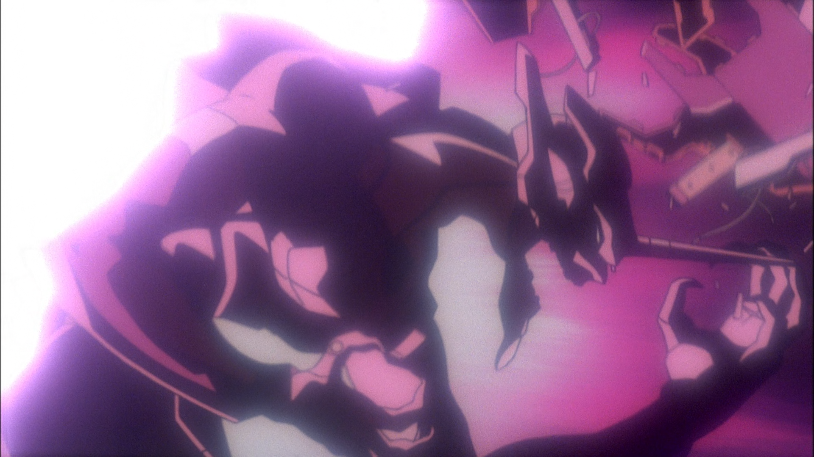
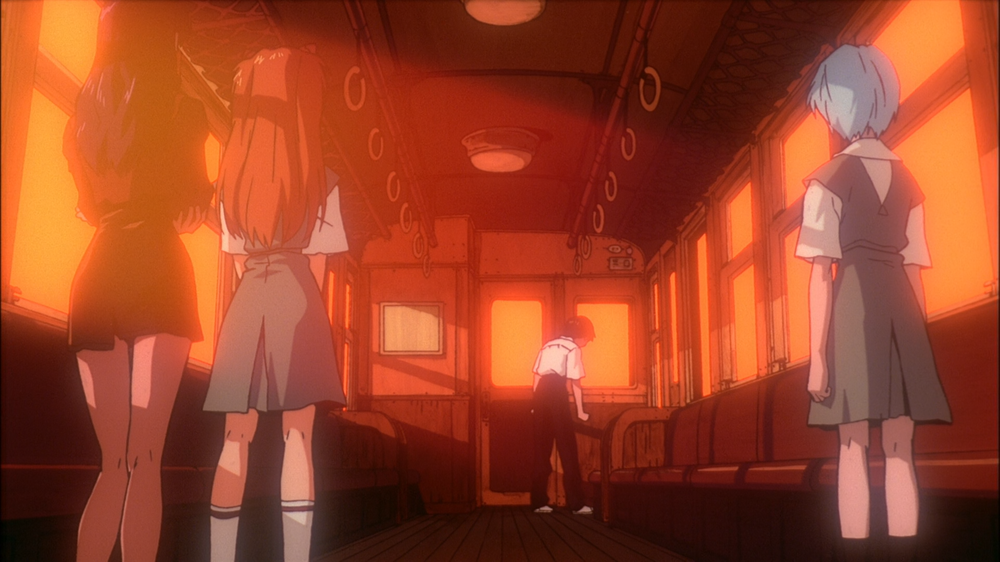
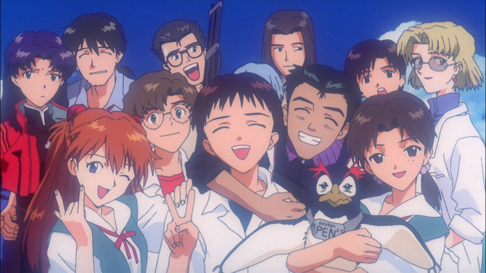
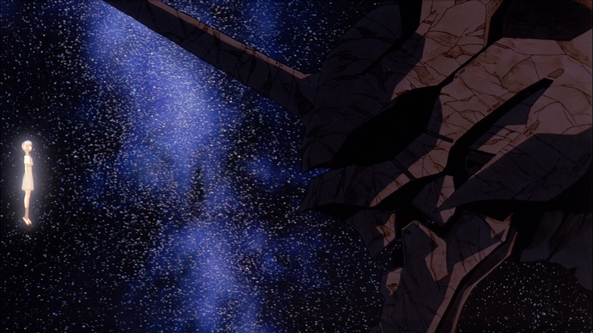
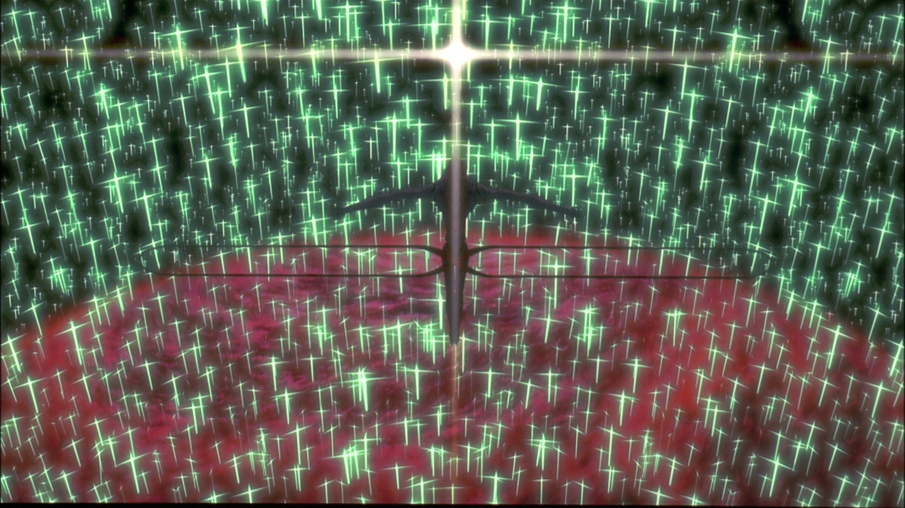